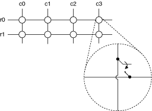

矩阵是最灵活的开关配置之一。与多路复用器不同，矩阵可以将多个输入连接到以列和行形式组织的多个输出。您可以将任何列连接到任意数量的行，将任何行连接到任意数量的列。在行和列的每个交点处，都有一个开关。当开关关闭时，行将连接到列。
矩阵大小通常被描述为 M 行乘以 N 列（M × N）。下图所示为1线、2×4矩阵。

复 用
提交有关此主题的反馈。请访问 ni.com/support 以获取技术支持。
 提交有关此主题的反馈。
提交有关此主题的反馈。 请访问 ni.com/support 以获取技术支持。 提交有关此主题的反馈。请访问 ni.com/support 以获取技术支持。
请访问 ni.com/support 以获取技术支持。 提交有关此主题的反馈。请访问 ni.com/support 以获取技术支持。